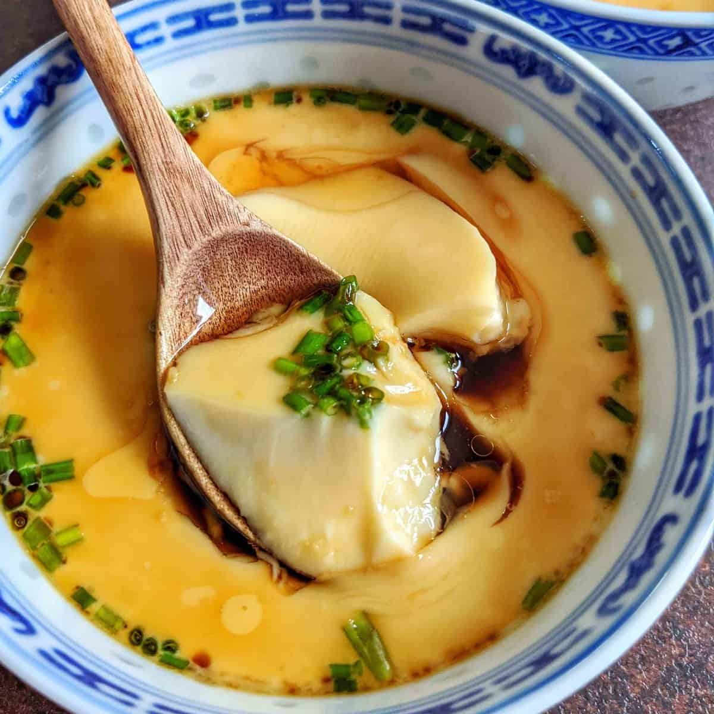

Telur Kukus Babi Cincang

Description:
Telur kukus ala chinese yang dimasak dengan suhu rendah sehingga menghasilkan tektur lembut dan meleleh di mulut.
Ingredients:
- 2 telur
- 240ml air hangat
- 1/2 sdt garam
- 1/2 sdt kaldu ayam bubuk
- Babi cincang matang (jumlah sesuai selera)
- Saus: Mix 1 sdm minyak wijen, 1 sdm kecap asin,1 sdt merica, 2 sdm air
Cara Memasak:
- Panaskan air di kukusan hingga mendidih
- Campur telur, air, garam dan kaldu bubuk hingga merata
- Pindahkan campuran telur ke wadah besi
- Masukkan babi cincang ke dalam campuran telur yang sudah dipindahkan ke wadah besi
- Tutup wadah besi menggunakan cling wrap atau wadah besi lainnya.
- Kukus hingga 15 menit dengan api kecil. Jika belum matang, kukus lagi sampai permukaan tidak basah.
- Setelah matang, tambahkan saus diatasnya sesuai selera.